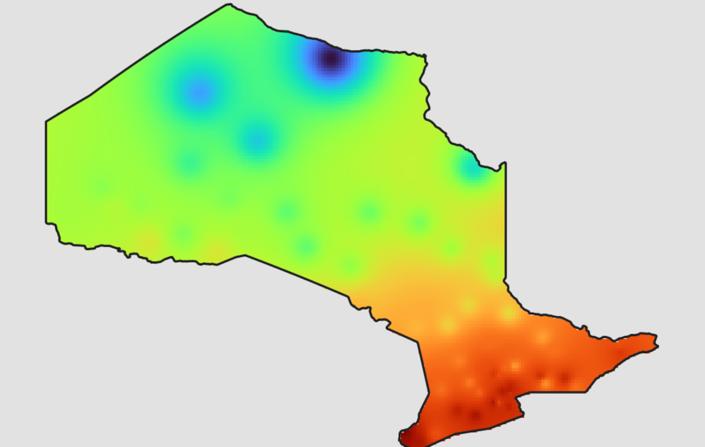

November 25th 2024
[Development In Progress]
Much shorter post for today's map since I'm on the road today, but I did get to experiment with interpolation to get a flat temperature map from the sensors in Canadian Weather Energy and Engineering Datasets . Enjoy.
